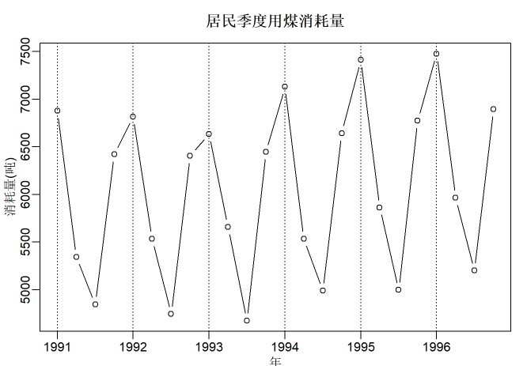

1时间序列的概念
时间序列的定义： 按时间顺序排列的随机变量序列。
观测样本: 时间序列各随机变量的观测样本。一定是有限多个。
一次实现(一条轨道): 时间序列的一组实际观测。
时间序列分析的任务: 数据建模，解释、控制或预报。
记号：$\{X_t\},\{x_t\},X(t),x(t)$
1.1时间序列的分解
- 趋势项$T_t$
- 季节项$S_t$
- 随机项$R_t$
- 有时还有随机周期项
季节模型有： 固定的周期季节：$S(t+s) = S(t), \forall t,只需要S_1,S_2,…,S_s 且可设\sum_{j=1}^sS(j) = 0$
关于随机项： 可设（数学期望）$E[R_t] = 0,\forall t$
1.1.1例子: 居民用煤消耗季度值

1.1.1.1 分解方法
- 估计趋势$\{\hat{T_t}\}$后, $X_t-\hat{T_t}$主要由季节项和随机项组成
- 趋势估计可用:
- 每年平均
- 线性回归拟合
- 滑动平均估计
- 等等
1.1.1.2 用每年的平均值作为趋势项估计, 季度平均作为季节项
这样的趋势是阶梯函数， 每年的4个季度的趋势相等。 去趋势后同季度平均作为季节项。